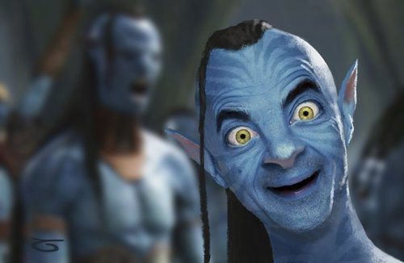
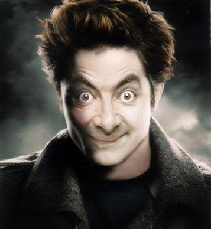
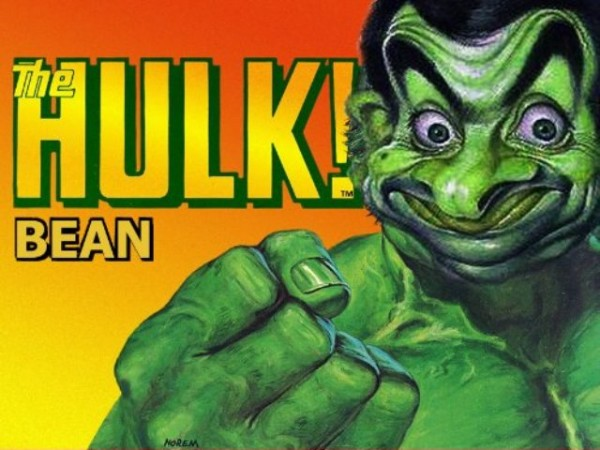

merican Pharoah (foaled February 2, 2012) is a Thoroughbred racehorse who in 2015 became the 12th American Triple Crown winner, and the first since Affirmed in 1978. He also became the only horse to win the Breeders' Cup Classic along with all three Triple Crown races—the Kentucky Derby, Preakness Stakes, and Belmont Stakes. He was bred and owned throughout his racing career by Ahmed Zayat's Zayat Stables, trained by Bob Baffert, and ridden in most of his races by Victor Espinoza. After the Belmont, he easily won the Haskell Invitational on August 2. On August 29, he finished a close second at Travers Stakes at Saratoga Race Course, snapping a winning streak of eight races. After a layoff of two months, he shipped to Keeneland for the 2015 Breeders' Cup and contended in the Breeders' Cup Classic, where he challenged older horses for the first time and won by 6 1⁄2 lengths, breaking the track record. He was retired at the conclusion of his 2015 racing year and now stands at stud at Ashford Stud in Kentucky. (Full article...
  